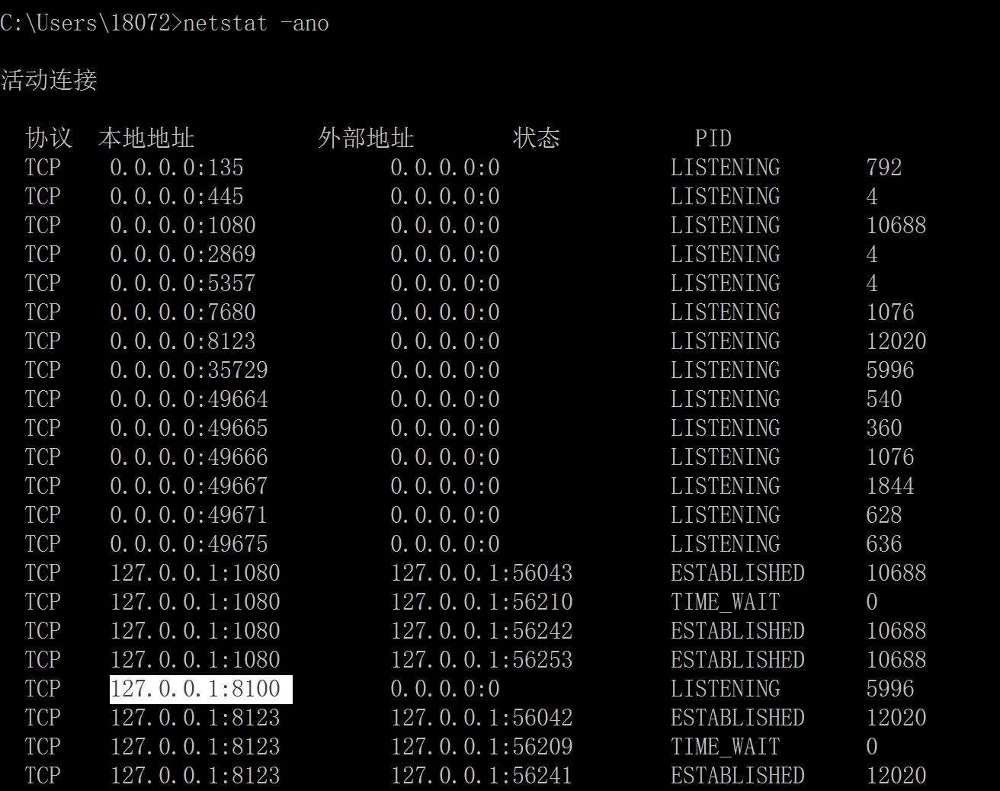
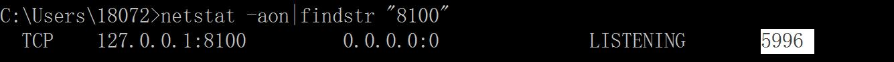
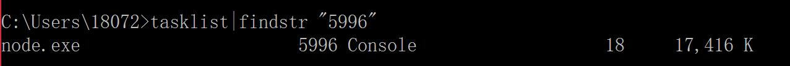
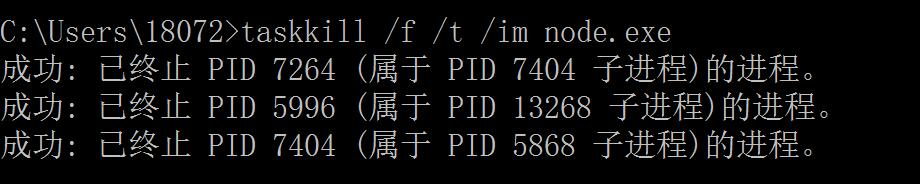
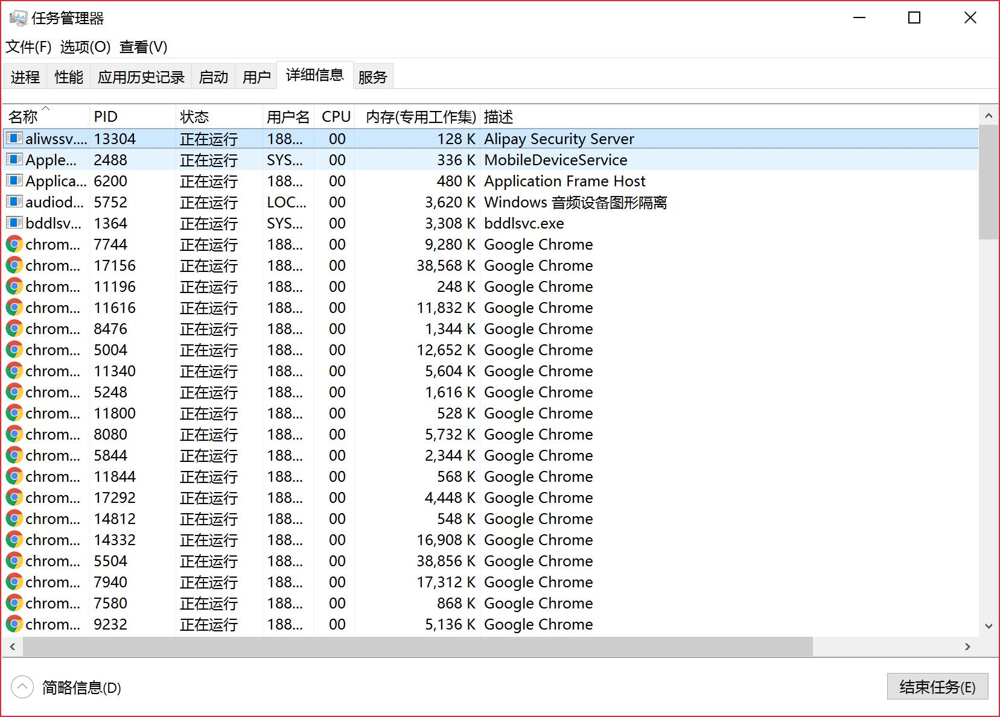

解决端口冲突问题
我们在启用某些服务时，比如启动本地Tomcat，或者本地MySQL，往往可能会存在因端口占用而启动失败的情况。
netstat -ano
我们可以打开命令行，输入netstat -ano查看所有端口的占用情况

比如我们要使用8100的端口号，我们就需要先找到占用这个端口号的程序，然后再将其关闭，
netstat -aon|findstr “端口号”
我们需要通过最后一列的PID来查找对应的程序，
我们也可以输入netstat -aon|findstr "8100"来查看对应的PID为5996。

tasklist|findstr “PID”
输入tasklist|findstr "5996"查看占用该端口的程序是什么。

taskkill /f /t /im 程序名称
输入 taskkill /f /t /im node.exe结束该程序。

通过任务管理器关闭程序
知道程序的PID之后我们通过PID在任务管理器中找到这个程序然后结束他。
